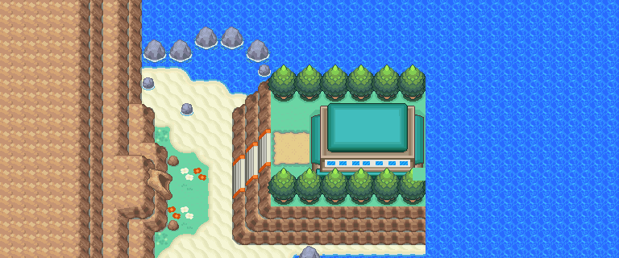
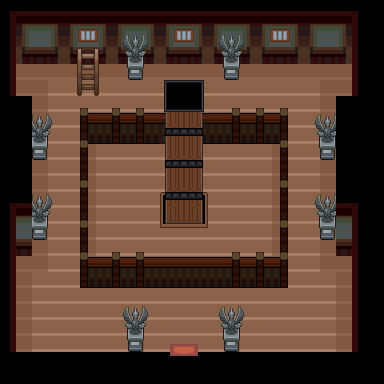
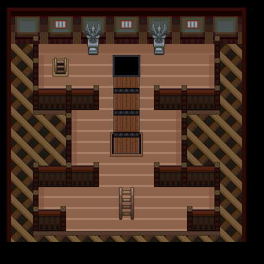
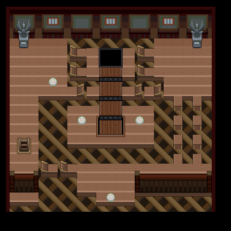
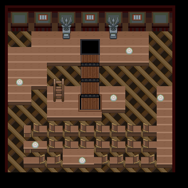
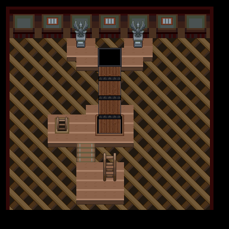

本槽的进化去向
wiki_export/core/data/species.json
wiki_export/core/data/national_dex.json
wiki_export/core/data/evolutions.json
wiki_export/world/data/acquisition_by_species.json
wiki_export/world/data/encounters.json
wiki_export/world/data/maps.json
wiki_export/enrichment/reference_only/evolution_methods.json
wiki_export/core/data/items.json
wiki_export/core/data/moves.json
返回宝可梦索引 ｜ 地点索引 ｜ 形态与占位
共享RGB底图；点击可缩放定位。数字对应本页相关地点，不代表地图上全部事件。
地图范围记录：当前资料没有精确人物／遭遇坐标。
放大定位与查看相邻入口 →

地图范围记录：当前资料没有精确人物／遭遇坐标。 底图有1个图块缺少原始数据。
地图范围记录：当前资料没有精确人物／遭遇坐标。 底图有3个图块缺少原始数据。




